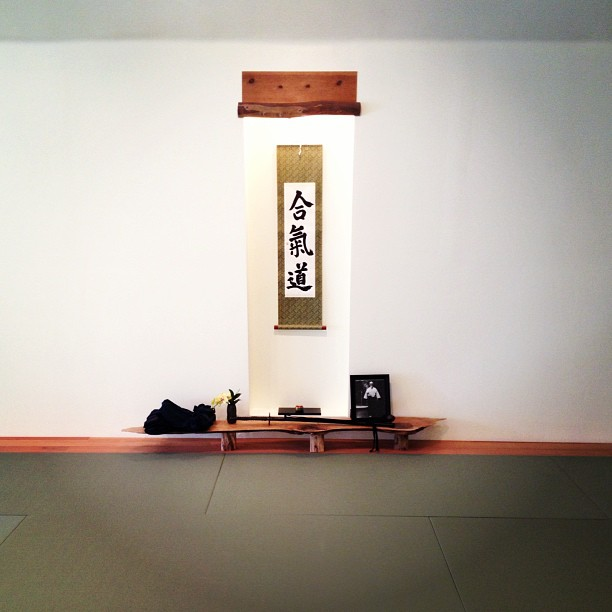
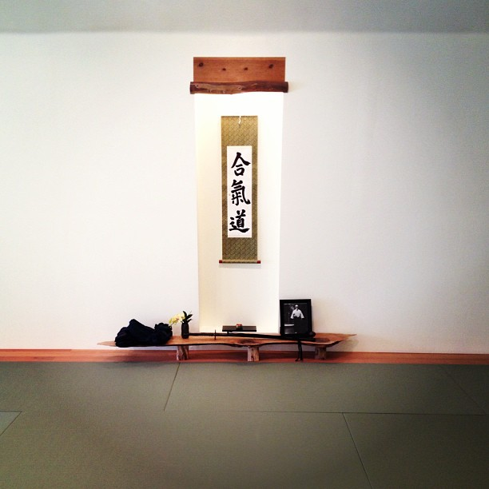

- aikido
- brazilian jiu-jitsu
- filipino martial arts
Entering Maru Dojo, one might note that the atmosphere is lacking in punching bags
and fighting rings. Instead, one finds a peaceful, zen-like atmosphere, a place students consider the beginnings of
their humble journey to which they have cultivated a fond attachment.
The students take pride in cleaning the dojo. It is a place of peace, a venue for meditation and self-improvement. The gym-like mentality and mixed martial arts attitude are absent from Maru Dojo. Humility is strongly encouraged, and students check their arrogance prior to entering, increasingly familiar with only the hindrance to progress it brings. The door is wide open to whomever wants to learn and share, but shut tightly for ego.
Training is done with earnest intent accompanied by light-hearted enthusiasm.
Beginners are always welcome! 
The students take pride in cleaning the dojo. It is a place of peace, a venue for meditation and self-improvement. The gym-like mentality and mixed martial arts attitude are absent from Maru Dojo. Humility is strongly encouraged, and students check their arrogance prior to entering, increasingly familiar with only the hindrance to progress it brings. The door is wide open to whomever wants to learn and share, but shut tightly for ego.
Training is done with earnest intent accompanied by light-hearted enthusiasm.
Beginners are always welcome! 